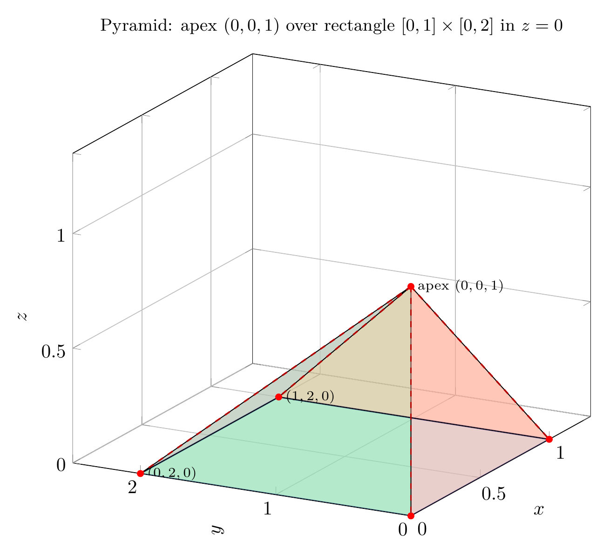

Please solve the problem in the following image.
(Image `20260928_145342_502717_utc_0800_0.png`. Alt text: Image: human_20260928_145342_502717_utc_0800)
20260928_145342_502717_utc_0800_0.png
End of problem
Answer
## Problem
Sketch the solid whose **volume** is given by the iterated integral
$$\int_0^1\!\int_0^{1-x}\!\int_0^{2-2z} dy\,dz\,dx.$$
### Step 1 — Read the three sets of bounds (outer → inner)
The iterated integral is a sum of elementary volumes $dV=dy\,dz\,dx$ over the point set
$$D=\{(x,y,z):\ 0\le x\le 1,\quad 0\le z\le 1-x,\quad 0\le y\le 2-2z\}.$$
- **Outer** $0\le x\le 1$: $x$ sweeps the unit interval.
- **Middle** $0\le z\le 1-x$: for each $x$, the variable $z$ runs from $0$ up to the line $x+z=1$. So the **projection of $D$ onto the $xz$-plane** is the triangle $T$ bounded by $x=0$, $z=0$, $x+z=1$.
- **Inner** $0\le y\le 2-2z$: for each point $(x,z)$, the solid extends in the $y$-direction from $0$ up to the plane $y+2z=2$ — the upper height depends only on $z$.
---
pgfplots_0.png
---
### Step 2 — The bounding surfaces and the 3-D solid
Collecting the constraints, $D$ is bounded by **five planes**:
$$x=0,\qquad z=0,\qquad y=0,\qquad x+z=1,\qquad y+2z=2.$$
Plotting these inequalities together gives the solid below.
---
\documentclass[border=6pt]{standalone}
\usepackage{pgfplots}
\pgfplotsset{compat=1.18}
\begin{document}
\begin{tikzpicture}
\begin{axis}[
view={-62}{20},
width=11cm, height=10cm,
xlabel=$x$, ylabel=$y$, zlabel=$z$,
xmin=0, xmax=1.3,
ymin=0, ymax=2.5,
zmin=0, zmax=1.35,
xtick={0,0.5,1}, ytick={0,1,2}, ztick={0,0.5,1},
axis lines=box,
grid=major,
title={\small Pyramid: apex $(0,0,1)$ over rectangle $[0,1]\times[0,2]$ in $z=0$},
]
% base rectangle z=0
\addplot3[fill=blue!35, fill opacity=0.45, draw=blue!60!black, thick]
coordinates {(0,0,0) (1,0,0) (1,2,0) (0,2,0)} -- cycle;
% face y=0
\addplot3[fill=orange!45, fill opacity=0.45, draw=black]
coordinates {(0,0,0) (1,0,0) (0,0,1)} -- cycle;
% face x=0
\addplot3[fill=green!45, fill opacity=0.45, draw=black]
coordinates {(0,0,0) (0,2,0) (0,0,1)} -- cycle;
% face x+z=1
\addplot3[fill=red!40, fill opacity=0.40, draw=black]
coordinates {(1,0,0) (0,0,1) (1,2,0)} -- cycle;
% face y+2z=2
\addplot3[fill=violet!40, fill opacity=0.40, draw=black]
coordinates {(1,2,0) (0,2,0) (0,0,1)} -- cycle;
% edges from apex
\addplot3[draw=red!70!black, thick, dashed, mark=none]
coordinates {(0,0,1) (0,0,0)};
\addplot3[draw=red!70!black, thick, dashed, mark=none]
coordinates {(0,0,1) (1,0,0)};
\addplot3[draw=red!70!black, thick, dashed, mark=none]
coordinates {(0,0,1) (1,2,0)};
\addplot3[draw=red!70!black, thick, dashed, mark=none]
coordinates {(0,0,1) (0,2,0)};
% vertices
\addplot3[only marks, mark=*, mark size=1.6pt, color=red] coordinates {
(0,0,0) (1,0,0) (1,2,0) (0,2,0) (0,0,1)};
\node[anchor=west] at (axis cs:0,0,0) {\scriptsize $(0,0,0)$};
\node[anchor=west] at (axis cs:1,-0.15,0) {\scriptsize $(1,0,0)$};
\node[anchor=west] at (axis cs:1,2,0) {\scriptsize $(1,2,0)$};
\node[anchor=west] at (axis cs:0,2,0) {\scriptsize $(0,2,0)$};
\node[anchor=west] at (axis cs:0,0,1) {\scriptsize apex $(0,0,1)$};
\end{axis}
\end{tikzpicture}
\end{document}

pgfplots_1.png
---
### Step 3 — Vertices and faces: it is a pyramid
Intersecting the bounding planes gives exactly **five vertices**:
$$A(0,0,0),\quad B(1,0,0),\quad C(1,2,0),\quad D(0,2,0),\quad E(0,0,1).$$
They assemble into a quadrangular pyramid (check: $V-E+F=5-8+5=2$):
- **Base:** rectangle $ABCD$ in the plane $z=0$, i.e. $0\le x\le 1,\ 0\le y\le 2$;
- **Apex:** $E(0,0,1)$, sitting directly above the corner $A$;
- **Four triangular faces:** $ABE$ (on $y=0$), $ADE$ (on $x=0$), $BEC$ (on $x+z=1$), $CDE$ (on $y+2z=2$).
Because the apex is *above a corner* rather than above the center, this is an **oblique** pyramid.
---
### Step 4 — Why it is a pyramid: the cross-sections
Hold $z=t$ fixed ($0\le t\le 1$). The bounds become
$$0\le x\le 1-t,\qquad 0\le y\le 2-2t=2(1-t).$$
The slice is therefore a **rectangle** of size $(1-t)\times 2(1-t)$ — exactly the base rectangle $[0,1]\times[0,2]$ shrunk by the factor $(1-t)$. As $t$ increases from $0$ to $1$ the rectangle shrinks to the single point $(0,0,1)$. This linear shrink-to-a-point is precisely the cross-section behavior of a pyramid, confirming the shape.
---
pgfplots_2.png
---
### Step 5 — Volume check
Integrating the inner pair first,
$$\int_0^{1-x}\!\int_0^{2-2z} dy\,dz=\int_0^{1-x}(2-2z)\,dz=\Big[2z-z^2\Big]_0^{1-x}=(1-x)^2\cdot 2 - (1-x)^2 = 1-x^2,$$
so
$$\int_0^1(1-x^2)\,dx=\Big[x-\frac{x^3}{3}\Big]_0^1=1-\frac13=\frac23.$$
The pyramid formula agrees:
$$V=\tfrac13(\text{base area})(\text{height})=\tfrac13\underbrace{(1\cdot 2)}_{\text{base}}\underbrace{(1)}_{\text{height}}=\frac23.$$
### Final answer
$$\boxed{\text{The solid is the oblique pyramid with apex }(0,0,1)\ \text{over the rectangle }[0,1]\times[0,2]\text{ in }z=0.\qquad V=\dfrac{2}{3}.}$$